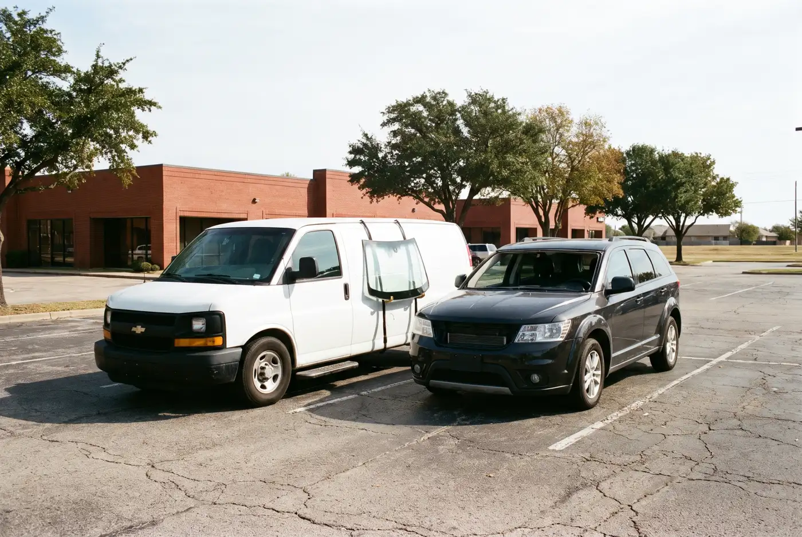

Windshield replacement, chip repair, camera calibration and side or back glass for cars, trucks and SUVs across Fort Worth. Every job is mobile.
If you’re not sure, start with the damage. A chip smaller than a quarter usually gets a repair. A long crack or anything in the driver’s view usually gets a new windshield, and a new windshield on most late-model cars means a calibration too.
Tell us your year, make and model when you call. That one detail decides most of the job in Fort Worth, from which glass gets ordered to whether the camera needs work.

A new windshield is the fix for long cracks, damage in the driver’s view, hail-pitted glass and cracks that run to the edge. It restores the glass that holds the roof up in a rollover and backs up the passenger airbag.
Anyone whose crack is longer than a dollar bill or sits right in front of the driver needs it. Leave it alone and the crack keeps growing with every hot afternoon and cold night, and a Fort Worth officer can ticket a windshield that blocks your view.
Call us today for windshield replacement in Fort Worth. Read more about windshield replacement in Fort Worth.
Chip repair fills a small break with clear resin, cures it with UV light and stops it from spreading. The factory seal around your windshield stays untouched.
Drivers with a chip smaller than a quarter, or a short crack, should call within the first week or two. Wait too long and road grime gets into the break, the repair looks worse, and the chip can still split into a crack you have to replace.
Call us today for windshield chip repair in Fort Worth. Read more about windshield chip repair in Fort Worth.
ADAS calibration lines up the forward-facing camera behind your windshield so lane-keeping, adaptive cruise and automatic braking read the road correctly.
Most cars built in the last several years with a camera near the rearview mirror need it after a windshield replacement. Skip it and you may get warning lights, or worse, a system that steers or brakes a little off from where it should.
Call us today for ADAS calibration in Fort Worth. Read more about adas calibration in Fort Worth.
Side window and back glass replacement covers door glass, vent glass, quarter glass and rear windshields, including back glass with defroster lines and truck sliders.
This is for break-ins, a window that fell into the door, or a back glass that shattered. Leave the opening taped up and rain, heat and the next thief all have an easy way in.
Call us today for car window replacement in Fort Worth. Read more about side & back glass in Fort Worth.
Call for a free quote. We come to your driveway or office.
Call (817) 769-3783 for a Free Quote